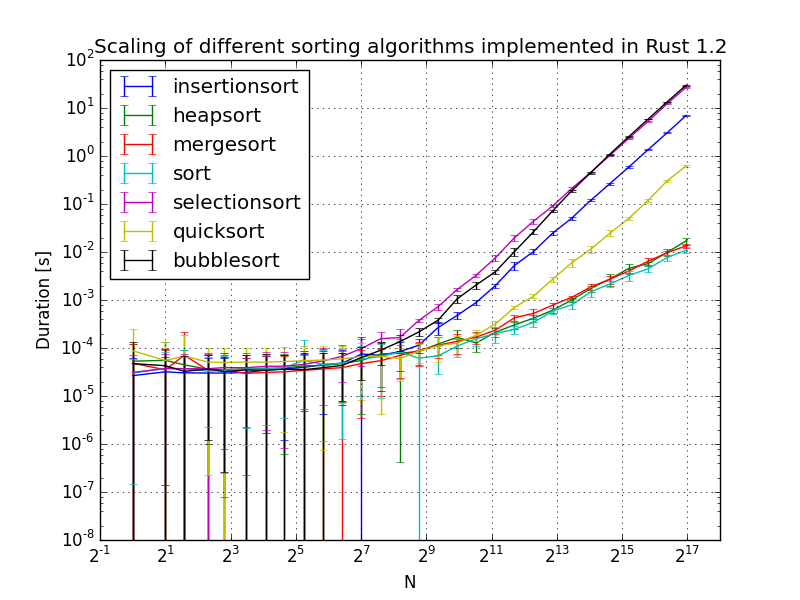

Crate sorting [−] [src]
Sorting algorithms implementations in Rust (1.2).
Goal
The goal of this project is purely educational and contains two aspects.
First is to learn different canonical sorting algorithms and their implementations. Starting on Wikipedia's sorting algorithms page I read the summary of some of the algorithms described here and tried to implement them without looking at the details. I did not research any optimization on them and as such, there might be faster (but more complicated) ways of implementing them. I did put some though in the implementations as to have efficient and clean implementations without wasting memory.
My second goal is to learn Rust, a new language which I find quite promising. Created at Mozilla and developed in the open by a wonderful community, Rust has an initial goal of creating a language to replace C++ as the language of choice for Firefox's rendering engine.
Some of the goals of Rust are:
- Memory safety without garbage collection
- Concurrency without data races
- Abstraction without overhead
- Stability without stagnation
For more information on Rust, see:
- Rust homepage: https://www.rust-lang.org/
- Wikipedia: https://en.wikipedia.org/wiki/Rust_%28programming_language%29
The code should be well commented and simple to follow and/or expand. Unit tests are used to validate every implementations.
This module is greatly inspired by my C++ templated sorting library located here: https://github.com/nbigaouette/sorting.
Algorithms
Sorting functions are encapsulated into modules. Implemented algorithms are:
Simple sorts
Efficient sorts
Usage
Notes
Testing and validation
Benchmarks
The library uses Rust's FFI to export the sorting functions. A Python 3 module is provided
rust_sorting.py that loads the library and exposes the different functions. The script
benchmark.py will run the algorithms with arrays of random data multiple times and plot the
timing calculations.
To reproduce:
cargo build --release python3 benchmark.py
To reload data and replot (no need for previous run):
python3 benchmark.py --reload

License
This code is distributed under the terms of the BSD 3-clause "New" or "Revised" License and is Copyright 2015 Nicolas Bigaouette.
Modules
| efficientsorts |
Efficient sorting algorithms. |
| simplesorts |
Simple sorting algorithms. |
Functions
| ffi_sort_i16 | |
| ffi_sort_i32 | |
| ffi_sort_i64 | |
| ffi_sort_i8 | |
| ffi_sort_u16 | |
| ffi_sort_u32 | |
| ffi_sort_u64 | |
| ffi_sort_u8 |